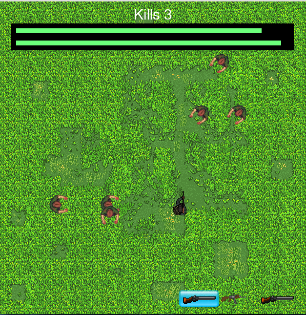

Every since I started programming I have worked on various projects in my free time.
All of these projects stem from my interests in different computer science topics
like machine learning, web scraping, data manipulation and game development. Many
of my projects required me to first learn the languages' syntax before I could begin coding.
The complexity of these projects range from simple games to advanced machine learining algorithms.
Some projects took weeks to code and required me to spend hours to
overcome problems. Others, only took a couple of days. Usually these quicker projects
consisted of me learning a specific language through a project like snake or mine sweepers.
To find out more about a project or to even try them yourself just click on
a project name underneath and it will show you the description of the project. To check it
out on GitHub just click on the "GitHub" logo and it will direct you to the project on
the site.
Feel free to check out these projects and try them yourself.
Python
This challenge consited of writing a bot in python to compete against other bots.
The goal of which is to win by placing pieces and defeneding against enemy attacks.
My algorithm for this challenge went through many frastic changes as my strategy
changed.
The highest rank I have achieved so far through my bots is #42 globablly.
This challenge consited of writing a bot in python to compete against other bots.
The goal of which is to win by coding logic for ships to collect a resource called Halite,
return it back to base, and avoid enemy ships.
This webscraper was built in python and, you guessed it,
scraped the web. It worked by being given a link, then reading
all the text on the site and compiling a list of string. It
would then sepreate this into new links and text. then it would
read the text to see if any preassigned keywords popped up, record
its findings on an excel sheet, and move on to the next site in
it's list.
This bot was a lot of fun and was even able to read through twitter
This game was one of the first I coded in python.
It was done for a class and required me to learn
the pygame library.

This is the very first coding project I have ever completed. It wanted to
write a program that would go through a list of usernames and follow each
of them. THe script could then be run again to unfollow them. The idea for
this bot was a application for small companys to use in order to reach a larger
following and base on social media.
Java
I was fascinated by Conway's Game of Life and wanted to try and create my own
version in java following the games basic rules. This project also required
a user interface integrated with an algorithm.
For more information about Conways Game of Life click here
I wanted to try using the word finding algorithm used in the word finder program in
another capacity. I decieded to use it in the respect of the game Tic-Tac-Toe. The end
result was much better than the snake AI. After a couple hours of training the AI was able to
compenently beat it's original AI, before training, and play well against a human player.
This project seemed like a natural progression after coding a gentic algorithm and snake.
I wanted to merge the two and create snake that would teach itself how to play. In order
to program this I had to create the framework for how the neural network would function.
this proved a huge challenge and took a whole month of work and the best I was able to achieve
was a snake that could avoid walls.
I feel like creating snake is Hello World 2.0 of learning a language. It requires
one to have an understand of how a language process data and how to visualize that
data into snake. This project was not too difficult but was my first expirence in game
design.
I wanted to try and create a project that had real world application. With this in
mind I created an application that would access my school's website and would retreive ones schedule
and homework for the day or week. I also created a GUI for the application using the knowlege from
my MineSweeper project.
I had never created a program with a user interface before and so this mine sweepers game
was my first attempt. It required me to learn java's JFrame software and how to use mouse
clicks to change game states.
I wanted to learn about machine learning. As a junior, I wasnt ready for a more complex
machine learning. I built this project as a proof of concept for a genetic algorithm. This
program was given a word and asked to find it while only being given a fitness score based on
the word it presents. Over time it gets closer and closer to the real word.
In order to be able to run tournaments through discord I coded this bot. It works
by using the Discord API with the Challonge API in order to run tournaments, report matches,
adds players to voice chat channels. The bot also had many fun commands for the users of
the discord channel to use.
C++
This project required me to gain an understanding of advanced calculus in order to
code advanced scenes with sphere, reflections, ligjt, color and checkerboard patterns.
This was the first project that required me to research before beginning coding.
Have you ever looked at code and said to yourself, "This is way to understandable"?
Well your search is over. Small snake is a program I wrote to try and create the game
snake with as few lines as possible and to make those few lines as impossible to read
as possible.
If you would like to check out my GitHub Profile
where most of these projects are hosted click here